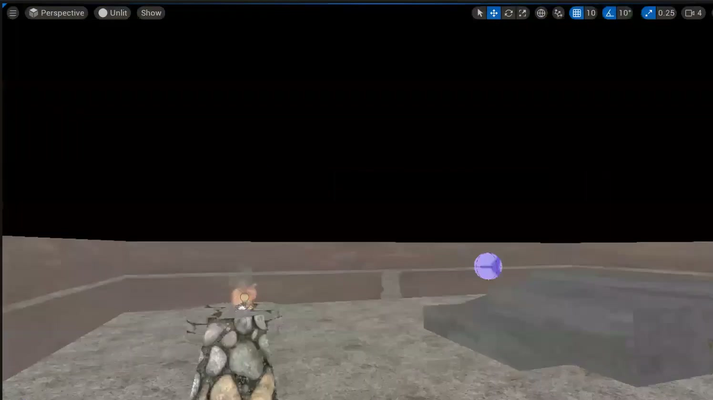
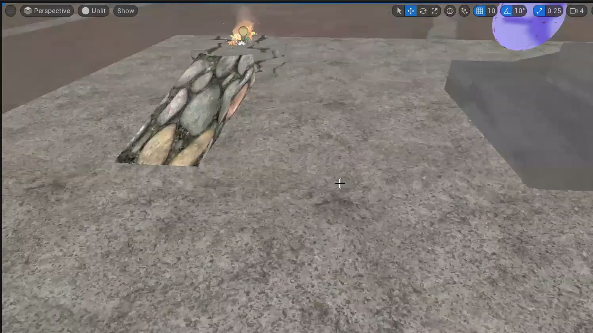

Experience
An Unreal gameplay framework for exploring a landscape, switching between first- and third-person viewpoints, and comparing different movement-control conventions.

Description
The playable scene brings basic landscape construction, materials, character movement, camera work, and a player-stat display into one framework. Moving around the space makes it possible to see how viewpoint and control direction affect the same environment.
The source documents a change between third-person and first-person views and a change between world-relative and character-relative movement. WASD moves the character and Space jumps. Sprinting, live stat changes, inventory, and additional entities are listed as incomplete or future work, so those systems are not presented as finished features.

Detailed features
Camera perspective changes
The project compares third-person and first-person views of the same scene. The difference demonstrates how camera placement changes spatial awareness and the relationship between character and environment.

Movement coordinate systems
World-relative movement follows fixed scene directions, while character-relative movement follows the character’s facing direction. The project explores the difference between those two control models.

Landscape, materials and stat display
The scene includes basic landscape work, color and texture choices, material setup, and a player-stat interface. These provide the visual and UI context for testing the character framework.
Build summary
The project uses Unreal Engine 5 and Blueprint visual scripting. The documented implementation covers camera and control experiments, landscape and material work, and a stat display. Planned inventory and behavior systems are intentionally kept out of the completed-feature list.
- Technology
- Unreal Engine
- Scope
- Unreal project
- Presentation
- 1080p footage unavailable
Feature video
1080p project video unavailable
A verified recording of this project at the requested resolution has not been published.